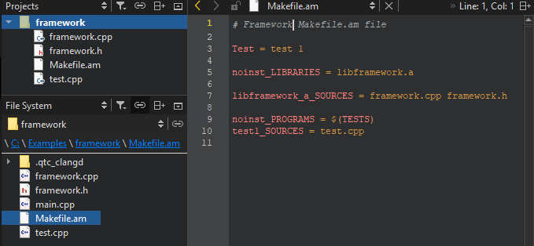
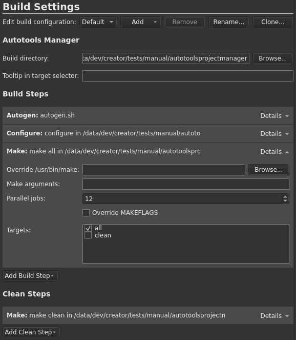

Autotools
Qt Creator can open projects that use the Autotools build system. You can build and run the projects directly from Qt Creator.
Note: Enable the AutotoolsProjectManager plugin to use it.
Working with Autotools Projects
To work with your Autotools project in Qt Creator:
- Select File > Open File or Project.
- Select the Makefile.am file from your project. This is the only way you can use the autotools plugin.
- Select the build directory. Only in-source building is currently supported.
- Select Finish. Qt Creator displays the project tree structure. The root node displays the project name. All project files are listed below it and you can open them from the list.

- Select
 (Run) to execute the predefined build steps (
(Run) to execute the predefined build steps (autogen.shorautoreconf,configure, andmake).The first time you run the application you must choose the executable.
- To check and edit autotools build steps, select Projects > Build Settings.
You can add parameters to the predefined autotools build steps.

See also Enable and disable plugins.